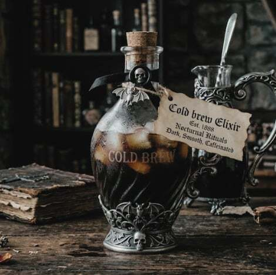

Cryptic Cold Brew
₱130
A mysterious blend of dark roast coffee beans
and secret ingredients that will leave you feeling both energized and enchanted.

Curative cures for the incurably damned.
A happy 21-year-old CIE student brewing forbidden remedies and dark arts because life is simply too good not to dabble in the shadows.
Come grab a curse-free elixir and watch me compile code by day and master the occult by night!

₱130
A mysterious blend of dark roast coffee beans
and secret ingredients that will leave you feeling both energized and enchanted.

₱145
A rich and velvety latte infused with vampire lore and mysterious ingredients,
perfect for those who dare to indulge in the dark side.

₱150
A decadent mocha infused with midnight secrets and mysterious ingredients,
perfect for those who dare to indulge in the dark side.